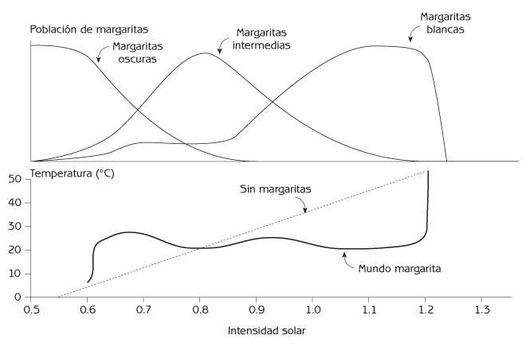
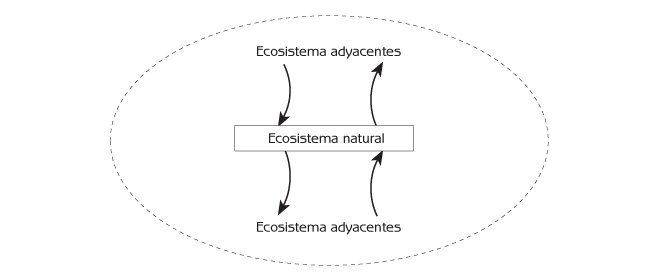
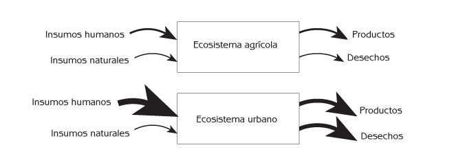
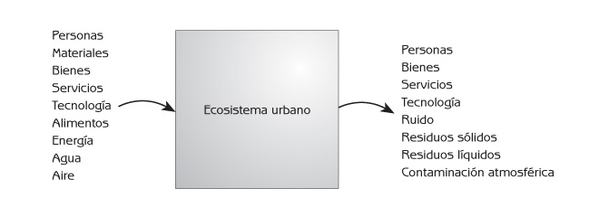
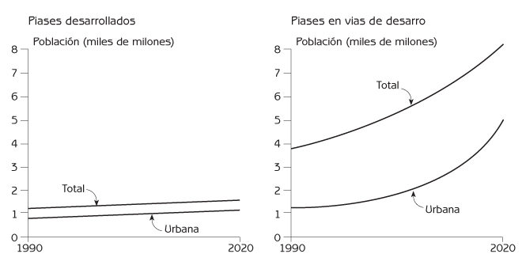
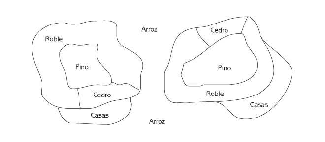
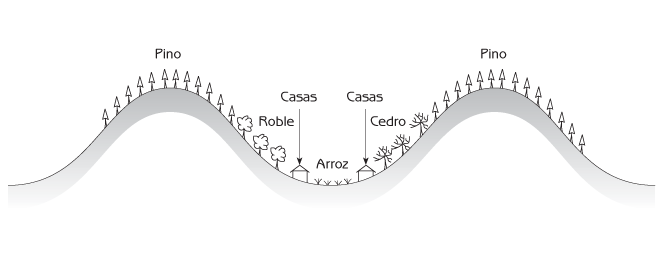
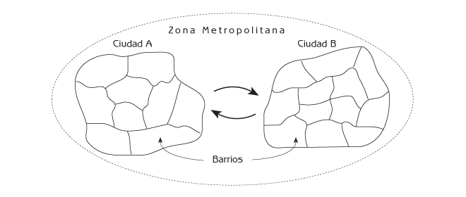

Ecología Humana
Conceptos Básicos para el Desarrollo Sustentable
Capítulo 5: Organización de los Ecosistemas
Los procesos de auto-organización de los ecosistemas hacen que éstos resulten sumamente complejos. Los procesos de organización son una mezcla de azar y selectividad ordenada. La complejidad resultante es altamente funcional para la supervivencia de los ecosistemas.
Las plantas, animales y microorganismos de un ecosistema se encuentran organizados en una red alimenticia en la que todos encajan funcionalmente entre sí. Encajan por dos razones fundamentales:
- El proceso de ensamble comunitario es capaz de seleccionar entre un menú de especies que tienen el potencial de encajar entre sí porque se han coadaptado unas a otras a través de la evolución biológica al haber vivido juntas en el mismo ecosistema durante miles de años.
- Mientras que el proceso de ensamble comunitario forma una red alimenticia, selecciona únicamente especies que encajan en la red existente. (Esta es la historia de la isla del Capítulo 4).
Este capítulo comienza enumerando algunas de las maneras en que los componentes vivos de un ecosistema se coadaptan entre sí. Después explica el diseño natural de los ecosistemas – cómo todos los elementos encajan entre sí para constituir un todo continuo y funcionalmente integrado. Continúa con la descripción de tres grandes tipos de ecosistemas y cómo se diferencian con respecto de insumos del ecosistema y egresos del ecosistema:
- Ecosistemas naturales.
- Ecosistemas agrícolas.
- Ecosistemas urbanos.
Además de tener a sus comunidades biológicas organizadas como redes alimenticias, los ecosistemas están organizados a lo largo del paisaje como una mezcla jerárquica de ecosistemas más pequeños – un mosaico de paisaje. Este capítulo concluirá describiendo cómo la mezcla de comunidades biológicas en un mosaico de paisaje se asocia con la mezcla subyacente de topografía y de las condiciones físicas en el mismo paisaje – y cómo se conectan los parches entre sí mediante insumos y egresos para constituir un mosaico de paisaje conjuntamente funcional.
Coadaptación
La coadaptación y la coevolución son propiedades emergentes de los ecosistemas. La coadaptación (encajar unos con otros) es una consecuencia de la coevolución (cambiar juntos). Mientras que la adaptación puede tomar cualquier forma que intensifique la supervivencia, las formas más conspicuas de la coadaptación están asociadas con las maneras en que los animales y los microorganismos se nutren de otros organismos vivos en la red alimenticia. Por una parte, los animales están adaptados para encontrar y comer las plantas o animales particulares que utilizan como alimento. Por otra, tienen la habilidad para esconderse o huir de los animales que se alimentan de ellos, y pueden desarrollar inmunidad ante parásitos y patógenos que los utilizan como hospedero. La coadaptación entre depredador y presa es un juego evolutivo que nunca termina. Los depredadores evolucionan formas más efectivas para capturar sus presas, y las presas responden evolucionando formas para evitar ser capturadas. Los gatos evolucionan un oído sensible para detectar ratones en la oscuridad, y los ratones evolucionan la habilidad de moverse silenciosamente para que los gatos no los oigan.
Las plantas no pueden correr ni esconderse, pero han evolucionado otras formas para evitar ser comidas. Muchas plantas tienen valores alimentarios tan bajos que no vale la pena consumirlas. Algunas especies de plantas contienen sustancias químicas que interfieren con la digestión de los animales; otras especies son venenosas o están protegidas por estructuras defensivas tales como espinas. Algunas especies de animales resuelven este problema especializándose para comer un tipo especial de planta tras evolucionar la habilidad para neutralizar el veneno u otras defensas de esa especie de planta. Este juego de coadaptación brinda a todas las especies de plantas y animales en el ecosistema la habilidad para obtener los alimentos que requieren para sobrevivir. También proporciona a cada especie la habilidad para sobrevivir a pesar de ser consumida por otros animales. La coexistencia está incorporada al juego. Es típico que los parásitos y patógenos evolucionen la habilidad para vivir en sus hospederos sin matarlos, una estrategia que les asegura una fuente de alimento más continua.
Las relaciones completamente cooperativas – simbiosis – también son frecuentes. Algunas especies de acacia tienen estructuras especiales que proporcionan alimento y micro-hábitat para hormigas que las protegen de los insectos que comen sus hojas. Las bacterias nitrificantes viven en las raíces de plantas como las leguminosas. Las bacterias convierten el nitrógeno atmosférico a una forma que las plantas pueden utilizar, y las plantas proporcionan nutrición para las bacterias. Existe una cooperación similar con los hongos (micorrizas) que ayudan a las raíces de las plantas a tomar fósforo del suelo. Las micorrizas reciben nutrientes de las plantas. Las abejas distribuyen el polen que fertiliza las flores mientras recolectan polen y néctar como alimento. La naturaleza contiene cientos de relaciones simbióticas como éstas. La consecuencia de la coadaptación es un grupo de plantas, animales y microorganismos a partir del cual el proceso de ensamble comunitario puede formar ecosistemas viables.
Diseño de los Ecosistemas
La coadaptación y el ensamble comunitario son las fuentes a las que acude la naturaleza para diseñar los ecosistemas, un proceso de diseño que se puede resumir comparando los ecosistemas con otro tipo de sistema – un televisor. Los ecosistemas y los televisores son similares en ciertos aspectos porque ambos son sistemas; y son diferentes en otros porque los ecosistemas han sido diseñados por la naturaleza y los televisores han sido diseñados por personas con un propósito muy específico. Uno de los aspectos más importantes en que se parecen los ecosistemas y los televisores es que ambos tienen una selección de partes que funcionan conjuntamente. Un televisor tiene un gran número de componentes electrónicos, cada uno de ellos precisamente ajustado a los demás componentes del aparato. Un televisor no podría funcionar si sus componentes electrónicos se seleccionaran y se conectaran entre sí al azar. Desde luego no habría una imagen, y el televisor probablemente explotaría al enchufarlo. Los ecosistemas también tienen una selección de componentes que pueden encajar entre sí con precisión porque se encuentran coadaptados a través de su evolución biológica. Las especies componentes de un ecosistema sobreviven porque encajan entre sí de manera tal que permite al ecosistema en conjunto proporcionar los recursos necesarios para cada especie. Esto sucede mediante los procesos de los ecosistemas, tales como los ciclos de materia y el flujo de energía, analizados en el Capítulo 8.
Los aparatos de televisión y los ecosistemas derivan todo su sistema de comportamiento del hecho de que el comportamiento de cada componente del sistema está limitado por las acciones de los demás componentes. Aunque todos los componentes electrónicos de un televisor podrían tener en teoría un amplio rango de corrientes eléctricas, la corriente de cada componente depende de las que provienen de otros componentes. En consecuencia, las corrientes que corren por el televisor están constreñidas por su diseño a generar patrones ordenados que construyen una imagen. La imagen es una propiedad emergente del televisor.
Los mismos tipos de limitaciones se aplican a los ecosistemas. Aunque todas las plantas, animales y microorganismos tienen la capacidad reproductiva para multiplicarse hasta alcanzar cifras enormes, el tamaño de sus poblaciones es limitado por las fuentes de alimento, los enemigos naturales y otras fuerzas ecológicas. Las poblaciones incontroladas podrían dañar otras partes del ecosistema, destruyéndolo y destruyéndose a sí mismas. El ecosistema asegura su supervivencia mediante mecanismos de retroalimentación que regulan a las poblaciones biológicas que forman parte de él.
Sin embargo existen algunas diferencias importantes entre los ecosistemas y los televisores. Los ecosistemas tienen un nivel de redundancia (duplicación) más elevado que el de los televisores, y esto les brinda una mayor confiabilidad y resiliencia. (Nota del autor: aunque la palabra inglesa resilience no tiene equivalente directo en el idioma español, se ha optado por utilizar el término resiliencia por ser más sencillo y más fácilmente reconocido en el ámbito académico que otras alternativas. En breve, el término se refiere a la capacidad de recuperación. Véase la discusión mas detallada al respecto de la resiliencia en el Capítulo 11.). Dado que los televisores están diseñados para que se les pueda construir lo más económicamente posible, sólo cuentan con un componente para cada función. Si se retira un componente, el televisor deja de funcionar. En el caso de los ecosistemas hay una considerable duplicación de funciones entre los diferentes organismos. Cada función importante en un ecosistema es normalmente llevada a cabo por varias especies distintas, a veces por docenas de ellas.
Los ecosistemas y los televisores se diferencian en otro rasgo importante. Los componentes biológicos de los ecosistemas son sistemas adaptativos complejos de por sí, con la habilidad para cambiar según lo demanden las circunstancias. Una vez que se ha ensamblado un televisor, cada uno de sus componentes mantiene las mismas características funcionales, independientemente de lo que suceda con el resto del circuito. Y una vez soldado en su lugar, ningún componente puede cambiar su conexión con los demás componentes. Los ecosistemas son muy diferentes porque, dependiendo de lo que esté sucediendo en un momento particular, las plantas y los animales pueden cambiar la forma en que interactúan con otras especies. Por ejemplo, los animales que pueden comer distintos tipos de alimentos pueden cambiar de una fuente de alimento a otra cada vez que una empiece a escasear y la otra abunde.
Homeostasis de los Ecosistemas
La regulación demográfica mantiene a todas las poblaciones de la comunidad biológica de un ecosistema dentro de los límites impuestos por el funcionamiento del ecosistema en conjunto. La capacidad de carga para cada especie de planta, animal o microorganismo depende de lo que suceda con otras partes del ecosistema. Los ecosistemas también mantienen sus condiciones físicas dentro de ciertos límites. Por ejemplo, la cantidad de agua en el suelo es regulada por procesos físicos y biológicos. Las plantas funcionan mejor cuando no hay demasiada agua, o demasiado poca. Un exceso de agua puede desplazar el aire que requieren los microorganismos y las raíces de las plantas; y su escasez restringe el crecimiento de las plantas. Si hay demasiada agua en el suelo después de una lluvia intensa, las plantas la consumen en grandes cantidades, y el exceso de agua se filtra hacia abajo a través del suelo. Si escasea demasiado el agua durante los períodos de menor precipitación, las plantas reducen su consumo de agua, y la arcilla y la materia orgánica del suelo almacenan agua que podrán utilizar las plantas y los microorganismos del suelo.
La homeostasis del ecosistema no es tan exigente como la de los organismos individuales, pero es igual de real – particularmente en los ecosistemas naturales y en las partes naturales de los ecosistemas agrícolas y urbanos. Los factores aleatorios, como las fluctuaciones en el estado del tiempo, pueden ocasionar pequeños cambios en la comunidad biológica y el ambiente físico de un ecosistema de un año a otro. Pero mientras el ecosistema no sea alterado de una manera importante por una perturbación externa severa, la homeostasis del ecosistema mantiene a la comunidad biológica y el medio ambiente físico dentro de ciertos límites funcionales. Si algo lesivo le sucede a una especie particular en un ecosistema, la abundancia de otra especie que tenga la misma función aumenta y la función continúa. El estado del ecosistema puede fluctuar en el tiempo, pero generalmente se mantiene dentro del dominio de estabilidad apropiado para ese tipo de ecosistema. No es necesario atribuir una ‘conciencia’ o ‘propósito’ a la impresionante efectividad con que cientos de circuitos de retroalimentación negativa mantienen todo los componentes de los ecosistemas dentro de los límites necesarios para que funcionen conjuntamente. Los ecosistemas se organizan a través de la coadaptación y el ensamble comunitario de tal forma que el ecosistema en conjunto continúa funcionando de manera sustentable.
La hipótesis de Gaia expresa el concepto de homeostasis del ecosistema para el ecosistema global del planeta Tierra. Gaia es el nombre de la diosa griega que encarna la Madre Tierra. La hipótesis de Gaia sostiene que ‘la vida en la Tierra mantiene el clima y la composición atmosférica en niveles óptimos para la vida’. Por ejemplo, el ciclo del carbono mantiene el oxígeno atmosférico y el bióxido de carbono en los niveles de concentración requeridos por las plantas y los animales en el ecosistema global. Esto se consigue mediante una variedad de procesos que incluyen la fotosíntesis, la respiración y el sistema amortiguador del ácido carbónico-bicarbonato-carbonato en el océano. La homeostasis del ecosistema global es consecuencia de la homeostasis del gran número de ecosistemas locales pero mutuamente interactivos del planeta.
Un planeta imaginario llamado Mundo Margarita ilustra la idea básica de la hipótesis de Gaia. Muestra cómo la vegetación puede contribuir a regular la temperatura de la Tierra ajustando los niveles de reflexión y absorción de la radiación solar (‘albedo’). El Mundo Margarita tiene tres tipos de flores. Unas son blancas, las segundas tienen un color intermedio (gris) y las terceras son oscuras. Las flores oscuras absorben la mayor parte de la radiación solar que incide sobre ellas, convirtiéndola en calor, de modo que las flores oscuras son las que más calientan el Mundo Margarita. Las flores blancas reflejan la mayor parte de la radiación solar, de manera que son las que menos calientan el Mundo Margarita. Las flores oscuras sobreviven mejor a temperaturas más bajas, las blancas sobreviven mejor a temperaturas más altas, y las flores de color intermedio sobreviven mejor a temperaturas medias.
La temperatura del mundo Margarita es regulada por un circuito de retroalimentación negativa que cambia las cantidades de flores de colores claros y oscuros. Si la radiación solar aumenta, y empieza a ascender la temperatura, se vuelve demasiado cálido para que sobrevivan las flores oscuras y algunas de ellas son reemplazadas por flores claras (vea el cuadro superior de la Figura 5.1). En vista de que las flores más claras absorben menos radiación, la temperatura desciende. Si la intensidad de la radiación disminuye y la temperatura baja demasiado, hará demasiado frío para que sobrevivan las flores blancas, y algunas de ellas serán reemplazadas por flores más oscuras. En vista de que las flores oscuras absorben más radiación solar, la temperatura se eleva.

Figura 5.1 Cambio en las poblaciones de margaritas que mantienen la temperatura constante del Mundo Margarita dentro de un amplio rango de intensidad solar. Fuente: Adaptado de Lovelock, J (1979) Gaia: A New Look at Life on Earth.
La línea continua en el cuadro inferior de la Figura 5.1 muestra la temperatura de Mundo Margarita bajo diferentes intensidades de radiación solar. A lo largo de un amplio rango de radiación (de 0.6 a 1.2), la temperatura de Mundo Margarita se mantiene alrededor de 22.5º Celsius, que es la temperatura óptima (es decir, la mejor) para las flores. La línea punteada del cuadro inferior muestra lo que pasaría en un mundo que no tuviese margaritas de colores diferentes, donde la temperatura tendría una relación lineal con la intensidad de la radiación solar (esto es, no habría regulación de la temperatura).
Comparación entre Ecosistemas Naturales, Agrícolas y Urbanos
Es útil distinguir entre tres tipos principales de ecosistemas. Los ecosistemas naturales se organizan a sí mismos. Sus productos para uso humano incluyen los recursos naturales renovables como la madera, los peces y el agua. Los ecosistemas agrícolas y urbanos están organizados parcialmente por el insumo humano de materia, energía e información. El resto de su organización proviene de los mismos procesos de auto-organización que conforman los ecosistemas naturales. Los ecosistemas agrícolas proporcionan productos en forma de alimentos, fibras y otros recursos renovables. Los ecosistemas urbanos proporcionan vivienda humana y productos industriales. Los ecosistemas agrícolas y urbanos que difieren más de los naturales requieren mayores insumos humanos más intensos para su construcción y mantenimiento.
Las descripciones a continuación están generalizadas para cada tipo principal de ecosistema. Algunos ecosistemas, dependiendo de la escala espacial, son una combinación de dos o más de los tipos principales.
Ecosistemas naturales
Los procesos naturales son completamente responsables de estructurar los ecosistemas naturales, que contienen únicamente plantas y animales silvestres. Sus comunidades biológicas están totalmente conformadas por la coevolución, la coadaptación y el ensamble comunitario. Los ecosistemas naturales se auto-organizan, son autosuficientes, y se auto-mantienen. Sobreviven únicamente a partir de insumos naturales, como la luz solar y el agua. La mayoría de los insumos y egresos de los ecosistemas naturales consiste en intercambios con los ecosistemas adyacentes, cuando el viento, el agua, la gravedad o los animales, transportan materiales que también contienen energía e información (ver Figura 5.2). Los insumos y egresos son leves porque la mayoría de los ecosistemas naturales han desarrollado mecanismos para retener la materia. Por ejemplo, los ecosistemas naturales evitan la pérdida del suelo debida a la erosión ocasionada por la lluvia o el viento, cubriéndolo con hierba u hojas. Donde los suelos son naturalmente poco fértiles, los ecosistemas conservan dentro de sí los nutrientes minerales para las plantas, reteniéndolos dentro de los cuerpos de las mismas plantas, animales y microorganismos.

Figura 5.2 Intercambios de insumos y consumos de materiales, energía e información entre ecosistemas adyacentes.
Ecosistemas agrícolas
Los ecosistemas agrícolas utilizan plantas o animales domesticados para producir alimentos, fibras o combustibles para el consumo humano. La isla de la historia del ensamble comunitario en el Capítulo 4 era un ecosistema agrícola porque tenía ovejas. Los ecosistemas agrícolas son una combinación de diseños antropogénicos y diseños naturales. Las personas proporcionan cultivos o ganado, y la naturaleza proporciona plantas y animales silvestres mediante los procesos usuales de ensamble comunitario. Muchas de las plantas y animales silvestres son esenciales para el funcionamiento agrícola de estos ecosistemas. Las lombrices y otros animales del suelo mantienen la fertilidad del suelo descomponiendo los materiales de los animales y vegetales muertos en piezas menores que los dejan expuestos a la descomposición bacteriana. Las bacterias consumen plantas y animales muertos, transfiriendo los minerales de sus cuerpos al suelo en formas que permiten que las plantas los utilicen como nutrimento. Otras plantas y animales compiten con las personas por el consumo de la producción de un ecosistema agrícola y son consideradas frecuentemente malezas o plagas que deben ser excluidas del ecosistema en la medida posible. Además de las plantas y animales vivientes, los ecosistemas agrícolas contienen elementos antropogénicos no-vivientes, como los canales de riego y equipos de labranza. Los ecosistemas agrícolas no son autosuficientes. Requieren insumos humanos que los diferencien de los ecosistemas naturales en las formas requeridas por los agricultores (ver Figura 5.3).

Figura 5.3 Insumos y egresos de materiales, energía e información para ecosistemas agrícolas y urbanos.
Algunos ecosistemas agrícolas difieren mucho de los naturales; otros no. Los pastizales con animales de pastura como ovejas o reses generalmente requieren menos insumos humanos que los ecosistemas de cultivos porque los pastizales se parecen más a los ecosistemas naturales. Los ecosistemas agrícolas modernos son los que necesitan más insumos – maquinaria agrícola, fertilizantes químicos, plaguicidas y riego – porque son los que resultan más diferentes a los ecosistemas naturales. Los insumos intensivos incrementan la conversión de la energía solar a la energía de los alimentos para el hombre por dos vías importantes:
- Proporcionan condiciones favorables para el crecimiento de los cultivos, como la abundancia de agua y nutrientes minerales.
- Excluyen a las plantas y animales que compiten con la gente por la producción biológica del ecosistema.
Los insumos intensivos en los ecosistemas agrícolas modernos dependen en buena medida del petróleo. Se requieren grandes cantidades de energía petroquímica para manufacturar plaguicidas y fertilizantes, transportarlos a las zonas agrícolas y aplicarlos a los sembradíos. El petróleo es la fuente de materia y energía para manufacturar los plásticos que cubren el suelo para evitar las pérdidas de humedad por evaporación. Es la fuente de energía para la manufactura y operación de la maquinaria agrícola, para bombear agua de riego, y para transportar las cosechas a mercados distantes. Ya que es típico utilizar diez calorías de energía fósil por cada caloría de alimento producido, los sistemas agrícolas modernos no convierten simplemente la energía solar en energía alimentaria. También convierten la energía fósil en energía alimentaria. De hecho, la gente está ‘comiendo’ petróleo.
El agua es otro insumo intensivo, en el que el uso agrícola compite con el suministro para los ecosistemas naturales y urbanos. El riego moderno frecuentemente requiere grandes cantidades de agua, algunas veces proveniente de fuentes que se encuentran a cientos de kilómetros de distancia. Los conflictos alrededor del agua se convertirán en un rasgo creciente del escenario mundial.
El beneficio obtenido de los altos insumos es la obtención de grandes cantidades de productos – grandes volúmenes de producción de cosechas o animales. Sin embargo, los productos intencionados no son los únicos productos de los ecosistemas agrícolas modernos. Otros productos son los desechos que pueden dañar los ecosistemas cercanos. Los fertilizantes y los plaguicidas transferidos fuera de los ecosistemas agrícolas, escurriendo desde los sembradíos, pueden contaminar los arroyos, ríos y mantos freáticos de la región circundante.
Los ecosistemas agrícolas tradicionales comprenden el tipo de tecnologías agrícolas que la gente desarrollaba antes de la aparición de la tecnología moderna. La agricultura tradicional se desarrolló durante muchos siglos mediante un proceso de ensamble cultural de ensayo y error. Muchas regiones del mundo en vías de desarrollo que aún no han sido modernizadas aún dependen de la agricultura tradicional. Muchos ecosistemas agrícolas tradicionales son semejantes a los ecosistemas naturales porque los agricultores tradicionales en vez de combatir a la naturaleza, han diseñado sus ecosistemas agrícolas para aprovechar los procesos naturales. Por ejemplo, es común que la agricultura tradicional presente una mezcla de muchos cultivos en el mismo terreno, lo mismo que en los ecosistemas naturales hay una mezcla de diferentes especies de plantas. Este estilo de agricultura se llama ‘cultivo mixto’, o policultivo. La agricultura tradicional requiere menos insumos que la moderna, de manera que resulta más autosuficiente. La agricultura tradicional también genera menos productos que la moderna – produce menos cosechas y menos contaminación. La agricultura orgánica moderna, que lucha por estar en armonía con la naturaleza mientras proporciona alimentos libres de compuestos químicos tóxicos, es similar a la agricultura tradicional.
Ecosistemas urbanos
Las ciudades son ecosistemas urbanos. Están organizadas casi enteramente por gente. Usualmente están dominadas por estructuras hechas por el hombre, como edificios y calles. Mucha de la flora y fauna de las ciudades es domesticada, como las plantas de los jardines y las mascotas, pero también hay plantas y animales silvestres, como las malezas, los pájaros y las ratas. Los ecosistemas urbanos no son autosuficientes. Requieren grandes cantidades de insumos y generan cantidades substanciales de desechos (ver Figuras 5.3 y 5.4).

Figura 5.4 Insumos y egresos de materiales, energía e información en ecosistemas urbanos.
Las ciudades son la base de la civilización humana. Las primeras ciudades aparecieron hace unos 6,000 años. Aunque la mitad de la población humana actual vive en ciudades, en el pasado la mayoría de la gente vivía en ecosistemas urbanos más pequeños y más simples, como las aldeas. El crecimiento de las ciudades se aceleró considerablemente después de la Revolución Industrial, pero la dominancia de las ciudades que conocemos hoy en día es aún más reciente. A principios del Siglo XX, sólo 14 por ciento de la población humana vivía en ciudades. Actualmente, 75 por ciento de las personas que habitan las naciones industrializadas vive en ciudades. Aunque sólo 35 por ciento de la población del mundo en vías de desarrollo actualmente vive en ciudades, el número real de personas en las ciudades del mundo en vías de desarrollo es ya mayor que el número que se encuentra en las ciudades de las naciones industrializadas.
Hoy en día, la población urbana de las naciones industrializadas está creciendo muy lentamente, pero las ciudades del mundo en vías de desarrollo continúan creciendo muy rápidamente (ver Figura 5.5). En un lapso de 25 años, las ciudades del mundo en vías de desarrollo tendrán tres veces más gente que las de las naciones industrializadas. Muchas ciudades del mundo en vías de desarrollo están creciendo tan rápidamente que no pueden proporcionar a un porcentaje significativo de su población servicios básicos, como el agua, la recolección de residuos, la electricidad, la educación y los servicios básicos de salud.

Figura 5.5 Proyección del crecimiento de la población humana en ciudades durante los próximos 20 años.
Mosaicos Paisajísticos
Todo paisaje es un mosaico de diferentes sitios con distintas comunidades biológicas y por lo tanto, de distintos ecosistemas. Esto sucede porque:
- Sitios diferentes tienen condiciones físicas distintas. Estas condiciones definidas pueden ser consecuencia en parte de la variación natural del paisaje, y en parte, consecuencia de las actividades humanas.
- El proceso de ensamble comunitario produce comunidades biológicas distintas cuando las condiciones físicas son diferentes.
- La gente construye ecosistemas agrícolas y urbanos donde las condiciones resultan adecuadas.
Este se conoce como un mosaico paisajístico. Es una propiedad emergente de los ecosistemas.
La Figura 5.6 muestra un típico mosaico de paisaje en la región Kansai del Japón occidental. El mismo tipo de ecosistemas se repite a lo largo del paisaje. Esto sucede porque se repiten las mismas condiciones físicas en diferentes partes del paisaje. Los sitios que presentan condiciones físicas similares pueden tener comunidades biológicas prácticamente iguales. Tienen por tanto ecosistemas semejantes. La gente construye ecosistemas agrícolas o urbanos similares en los lugares donde las condiciones son parecidas.

Figura 5.6 Plano de un típico mosaico paisajístico en el occidente de Japón.
Un tipo particular de ecosistema es un agrupamiento de ecosistemas parecidos que reciben el mismo nombre con base en las plantas más abundantes y conspicuas de la comunidad biológica. Los ecosistemas forestales comunes en el occidente de Japón son:
- Pino (matsu);
- Roble (donguri);
- Cedro japonés (sugi);
- Ciprés japonés (hinoki).
Los bosques de pino y roble ocurren naturalmente. Los bosques de pino son frecuentes en las porciones más altas de las colinas donde los suelos son someros debido a la erosión edáfica. Esto es porque el suelo es arrastrado por el agua pluvial de las cimas y las pendientes de las colinas hacia los valles inferiores (ver Figura 5.7). Los bosques de roble son frecuentes en las faldas de las colinas, donde los suelos son más profundos. Los bosques de cedros y cipreses pueden parecer superficialmente ecosistemas naturales, pero son ecosistemas agrícolas plantados para producir madera de alta calidad para la construcción. Las personas plantan cedros y cipreses en filas ordenadas cerca de la falda de los cerros, donde los suelos más profundos contienen una cantidad mayor de humedad y de nutrimentos vegetales para sostener un crecimiento rápido de árboles. Japón tiene otros ecosistemas agrícolas, principalmente arrozales y campos de hortalizas, que la gente coloca en las partes más bajas y planas de los valles o en terrazas al borde de los valles. Los ecosistemas urbanos tales como las casas de los poblados, usualmente se encuentran al pie de las colinas, justo encima de los arrozales.

Figura 5.7 Perfil de un típico paisaje en el occidente de Japón.
Cada ecosistema proporciona hábitat para las especies de plantas y animales de su comunidad biológica. Un ecosistema de pinos tiene plantas que pueden vivir a la sombra de los pinos, microorganismos que pueden descomponer sus hojas, animales que se puede comer su corteza, hojas o raíces, y parásitos y patógenos adaptados a cada una de las plantas y animales. Todas las plantas, animales y microorganismos de cada tipo de ecosistema forman un grupo discreto de especies coadaptadas entre sí.
Cada ecosistema es una ‘isla’ ecológica porque se encuentra rodeado por otros ecosistemas que no proporcionan hábitat para las mismas especies de plantas y animales. A veces, las plantas y animales se mudan de los sitios donde viven a otros lugares con hábitat adecuados. Esto se llama dispersión y es una fuente de especies de nuevo ingreso al ensamble comunitario. Las plantas no se pueden mover como los animales, pero sus semillas pueden ser transportadas a nuevos lugares por el viento y los animales. Este proceso de dispersión y ensamble comunitario, que ocurre en todas partes todo el tiempo, es responsable de las comunidades biológicas que vemos en un paisaje. Los materiales transportados por animales, por el viento, o por el flujo del agua, de un ecosistema a otro son productos de un ecosistema e insumos de otro. Esta no sólo es una transferencia de materia, sino también de la energía y la información contenidas en la materia misma. Una semilla de planta que flota por el aire de un ecosistema a otro contiene energía en sus cadenas de carbono e información genética en su ADN.
Los mosaicos de paisaje tienen sus propios procesos de auto-organización, los cuales se ajustan a los tipos de ecosistemas en el paisaje y a las áreas que ocupan de tal manera que el paisaje en conjunto equilibra los insumos y productos. Por ejemplo, en un paisaje formado por pendientes cubiertas de bosques y arrozales en los valles inferiores, los arroyos son un producto de agua proveniente de los ecosistemas forestales y un insumo de agua para los ecosistemas de arrozal. Los agricultores pueden extender los arrozales pendiente arriba construyendo terrazas, pero el consumo de agua por los arrozales impone un límite a la superficie de terreno que pueden ocupar. Si hay demasiados arrozales, no quedarán suficientes bosques para proporcionarles agua a todos ellos. Este tipo de ajuste ocurre constantemente entre todo tipo de ecosistemas – naturales, agrícolas y urbanos. Los ecosistemas urbanos necesitan un área suficiente de ecosistemas agrícolas para obtener alimentos y otros recursos, y también requieren de ecosistemas naturales como fuente de agua.
El balance de los ecosistemas naturales, urbanos y agrícolas en el mosaico de paisajes es uno de las principales inquietudes ecológicas de nuestro tiempo. En cuanto a su capacidad para desplazarse unos a otros, parece haber una progresión de los ecosistemas urbanos a los agrícolas y a los naturales. Los ecosistemas agrícolas se expandieron y sustituyeron a grandes áreas de ecosistemas naturales en las naciones industrializadas durante los siglos pasados. El mismo proceso tardó más tiempo en adquirir impulso en los países del mundo en vías de desarrollo, pero ahora avanza activamente. Actualmente, los ecosistemas urbanos se expanden y desplazan tanto a los agrícolas como a los naturales por todo el mundo, un proceso que no podrá continuar por mucho tiempo porque los ecosistemas urbanos dependen de los agrícolas y los naturales para abastecerse de recursos tales como alimentos y agua.
Jerarquías espaciales
Los ecosistemas son espacialmente jerárquicos. Todos los pequeños ecosistemas en una localidad se combinan para conformar un ecosistema más grande en esa localidad. Todos los ecosistemas mayores de las diversas localidades se combinan para formar otro aún mayor para toda la región. Expandiendo la escala, todos los ecosistemas de una zona climática mayor forman un bioma, y todos los biomas se combinan para constituir el ecosistema Tierra. Los ecosistemas más pequeños son más uniformes en su interior, mientras que los más grandes son más variables.
Los ecosistemas urbanos también forman un mosaico de paisajes que es jerárquico en cuanto a espacio (ver Figura 5.8). Cada ciudad se encuentra dividida en vecindarios, y cada uno de ellos contiene ecosistemas más pequeños, como zonas residenciales, centros comerciales, escuelas, parques, zonas industriales y áreas de almacenamiento de agua. Cada uno de estos pequeños ecosistemas urbanos tiene sus propias estructuras: edificios, calles, otras estructuras construidas por el hombre, y una comunidad biológica. Cada vecindario tiene su historia y su sistema social propios, que incluyen las características étnicas y socioeconómicas de las personas que viven y trabajan en él, sus organizaciones, estilo de vida, ocupaciones, y demás actividades.

Figura 5.8 Jerarquía espacial de ecosistemas en una zona metropolitana.
Una ciudad puede encontrarse ligada a otras para formar una zona metropolitana. Los ecosistemas y los sistemas sociales de cada ciudad interactúan con los ecosistemas y los sistemas sociales del área circundante, creando la zona de influencia de la ciudad, que sirve como fuente de trabajadores, combustibles, alimentos, agua y materiales de construcción para la ciudad. En el pasado, la zona de influencia de una ciudad era un área discreta que la rodeaba. A partir de la Revolución Industrial, con el colonialismo y el comercio internacional, la zona de influencia de una ciudad puede extenderse a muchas partes del mundo.
Puntos de Reflexión
- ¿Cuáles son los diferentes tipos de ecosistemas naturales (a la manera de la Figura 5.6) en el mosaico de paisajes de la región donde vive? ¿Cuál es la posición típica de cada tipo de ecosistema en un perfil de paisajes como el que aparece en la Figura 5.7?
- Hable con un agricultor para aprender acerca de los ecosistemas agrícolas de la región donde vive. ¿Cuáles son los principales tipos de agricultura? ¿Cuál es la posición típica de cada tipo de agricultura en un perfil de paisajes? ¿Cuáles son las partes naturales importantes de sus comunidades biológicas (es decir, organismos vivos que no son cultivos ni ganado)? ¿Cómo se diferencian entre sí las comunidades biológicas de distintos tipos de ecosistemas agrícolas? ¿Cuáles son los insumos de cada tipo de ecosistema agrícola, y cuál es la función de cada insumo? ¿Qué organización o estructura (esto es, insumos de información) imponen los agricultores a sus ecosistemas agrícolas? ¿De qué manera utilizan los agricultores insumos de energía para lograr la organización y la estructura?
- ¿Cuáles son los intercambios significativos de insumo-egreso de materia, energía e información entre los ecosistemas naturales y agrícolas de la región donde vive?
- Haga el mapa de un área de un kilómetro de radio alrededor de su casa, que muestre los diferentes tipos de ecosistemas urbanos, tales como zonas habitacionales, áreas comerciales, parque. Edificios de oficinas o áreas industriales. Si en ese radio hay también ecosistemas naturales o agrícolas, muéstrelos en el mapa.
- Enumere los insumos y productos importantes de su ciudad o pueblo.